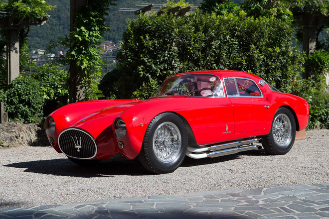
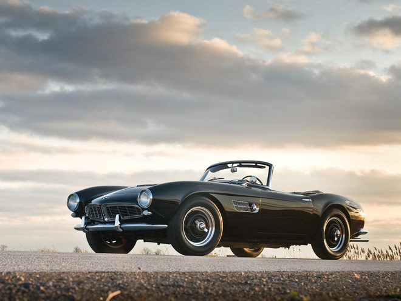
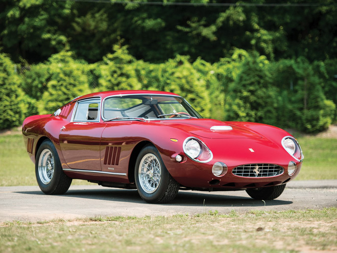
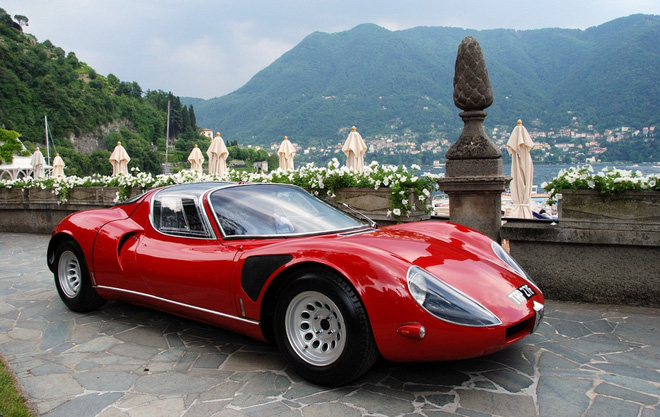
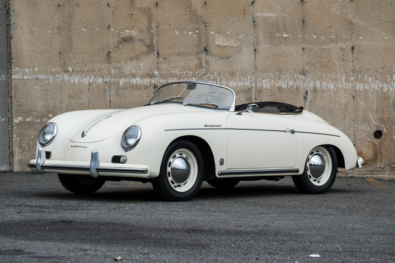

Top 5 chiếc xe cổ đẹp nhất mọi thời đại, chỉ nhìn thôi đã mê mệt
1. Maserati A6GCS Berlinetta
A6GCS Berlinetta là mẫu ô tô được ra mắt vào những năm 50 của hãng xe sang Maserati, Italy. Xe được thiết kế bởi hãng thiết kế ô tô hàng đầu của Ý - Pininfarina và được đánh giá là một trong những chiếc xe hơi tiêu biểu nhất mọi thời đại.Đây là mẫu xe siêu tốc từng thể hiện xuất sắc trong cuộc đua 1000 dặm năm 1954 với thời gian cán đích kỷ lục.

2. BMW 507
BMW 507 là mẫu xe mui trần hai chỗ hạng sang của BMW, chỉ được sản xuất trong khoảng thời gian từ năm 1956 đến năm 1959.Xe có thiết kế tinh tế và được đánh giá là một trong những chiếc BMW đẹp nhất mọi thời đại. Ở thời điểm hiện tại, 507 là một trong những mẫu xe có giá trị nhất từng được sản xuất bởi BMW.

3. Ferrari 275 GTB/4
Đây là mẫu xe 2 chỗ được sản xuất bởi hãng siêu xe của Ý, Ferrari vào những năm 60. Cho đến nay mẫu xe này vẫn được nhìn nhận là một trong những mẫu xe giá trị nhất trên thế giới. Xe sở hữu nội thất bọc da với phần thân xe được thiết kế bởi Pininfarina.Xe được trang bị hệ thống treo độc lập trên tất cả bánh xe và hệ thống phanh đĩa cho cả 4 bánh.

4. Alfa Romeo 33 Stradale
33 Stradale là một trong những mẫu xe nổi tiếng nhất của Alfa Romeo. Với kích thước nhỏ gọn, uốn cong và cách bố trí động cơ khoa học, xe được đánh giá là mẫu xe sáng tạo và độc đáo nhất của Alfa từ khi ra mắt.Alfa Romeo chỉ sản xuất đúng 18 chiếc 33 Stradale và tính đến thời điểm hiện tại, 33 Stradale đã trở thành một trong những “tượng đài” siêu xe Ý.

5. Porsche 356 Speedster
Porsche 356 là dòng xe được sản xuất từ năm 1948 đến năm 1965. Đây là dòng xe thương mại đầu tiên trong lịch sử của Porsche, trước khi được thay thế bởi dòng 911.Nhờ thiết kế đặc biệt, xe đã loại bỏ hầu hết lực cản do kính chắn gió tạo ra, giúp xe dễ dàng bứt phá trong mọi địa hình, đường đua.Hiện nay trên thế giới, đây là dòng xe được những người mê sưu tầm xe cổ hết mức lùng xục, thậm chí những chiếc được bảo quản tốt có mức giá lên tới 450.000 USD.
